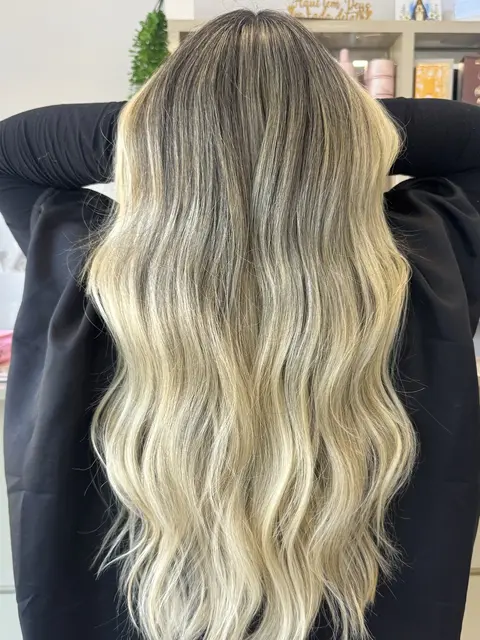

Onde sua beleza se torna digna de princesa
Especialista em loiros, com cabelo, unhas, cílios, sobrancelhas e micropigmentação em um só lugar. Escolha o serviço, veja os horários livres e agende em menos de 1 minuto.
- Especialista em loiros
- Agenda online
- Rua Roraima, 1557

Seu horário em 3 passos
Nada de esperar resposta para descobrir se tem horário. A agenda mostra só os horários em que o seu atendimento cabe inteiro.
Escolha o serviço
Pode escolher mais de um. O tempo e o valor somam na hora.
Veja os horários livres
A agenda calcula pelo tempo médio de cada serviço e mostra o que cabe.
Confirme no WhatsApp
A mensagem chega pronta para a gente. É só enviar e pronto.
Tudo para você se sentir linda
Preços claros e tempo médio de cada atendimento. Toque em uma categoria para ver tudo.
Loiros
Truck, Blonde Hair, Blonde Premium e Mechas Iluminadas, sempre com reconstrução ou botox.
a partir de R$ 400,00 02Hair care
Progressiva, botox, corte, escova, tonalização e cronogramas capilares.
a partir de R$ 90,00 03Nails
Manicure, pedicure, fibra de vidro, gel na tips, molde F1 e nail art.
a partir de R$ 10,00 04Lash
Lash lifting e extensão de cílios nos volumes brasileiro e egípcio.
a partir de R$ 120,00 05Beauty care
Design de sobrancelhas, henna, brow lamination e maquiagem.
a partir de R$ 30,00 06Micropigmentação
Sobrancelhas fio a fio, lábios e olhos com acabamento natural.
a partir de R$ 320,00Loiros sob medida para você
Do iluminado suave ao platinado, cada técnica é pensada para o seu tom de pele, o seu estilo e a saúde dos fios. E todo loiro sai daqui com reconstrução ou botox incluso.
- Mechas Iluminadas30 a 50% de preenchimento
- Truck50%, contorno em topo
- Blonde Hair50 a 70% de preenchimento
- Blonde Premium70 a 90% de preenchimento


Arraste e veja a transformação
Em breve, os resultados reais das nossas clientes, lado a lado.
Um espaço pensado para você
Um studio intimista no Cajuru, onde cada cliente é atendida com calma e carinho, do café ao resultado final.
Curitiba – PR
WhatsApp e agendamentos
Dicas para a sua beleza
Loiro que dura: 7 cuidados para manter o seu loiro lindo em casa
Matizador na medida, cronograma capilar e proteção térmica: o passo a passo para o loiro continuar iluminado até o próximo retoque.
Ler artigoBotox ou reconstrução: qual tratamento o seu loiro precisa?
Entenda a diferença entre os dois tratamentos, faça o teste do fio em casa e descubra o que o seu cabelo está pedindo.
Ler artigoExtensão de cílios: volume brasileiro ou egípcio?
Veja a diferença entre os volumes, quanto tempo dura a extensão e os cuidados para os fios ficarem lindos por mais tempo.
Ler artigoSeu próximo horário está a um toque
Escolha o serviço, veja os horários livres e confirme. Simples assim.